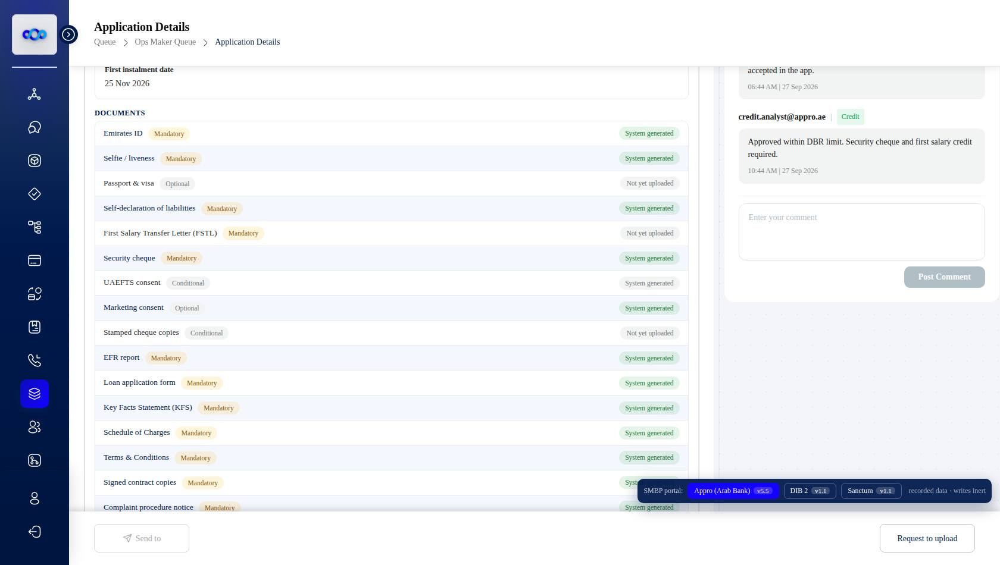
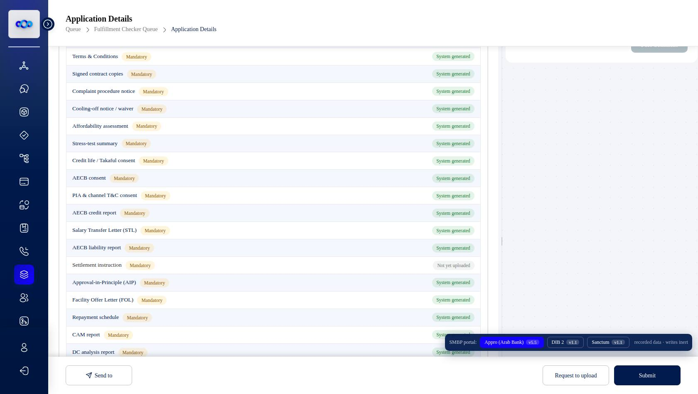
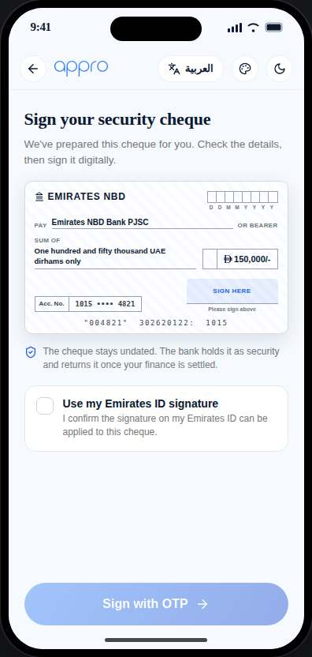
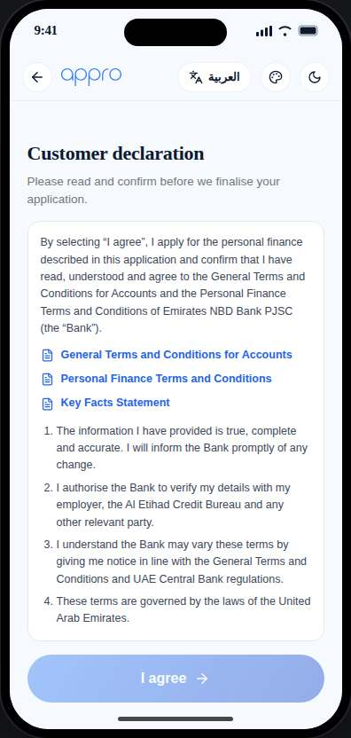
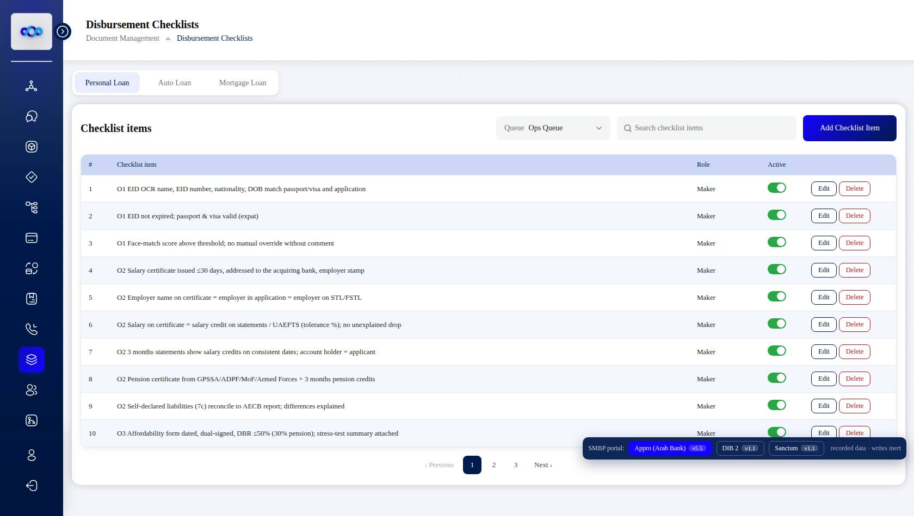
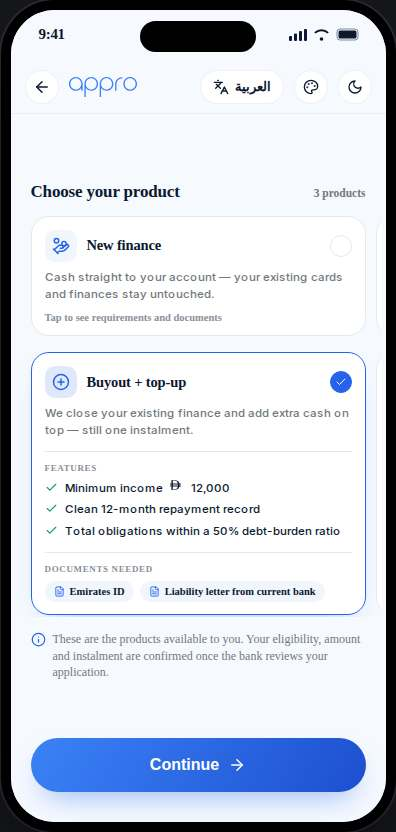
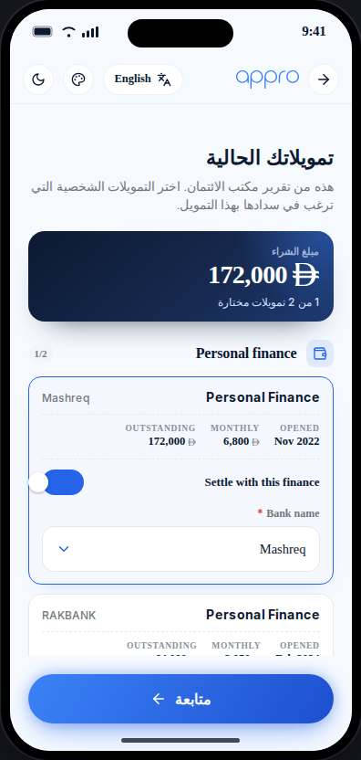
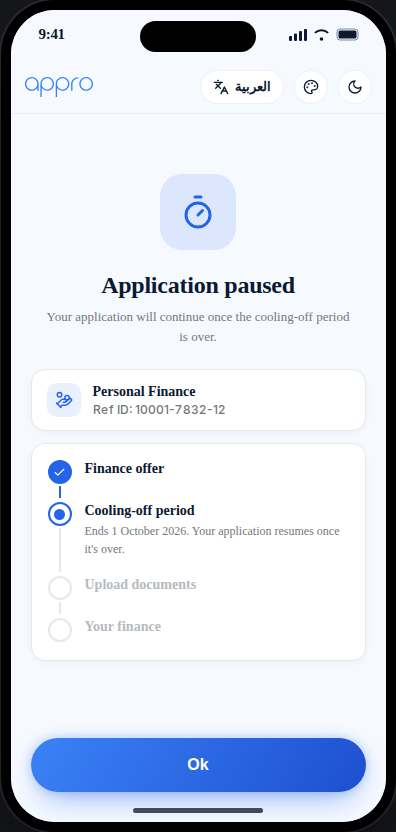

One card per not-approved ticket: the paste-ready PO comment on the left, the evidence on the right — live screenshots captured today from the Portal Mirror and the CJ prototype, plus drawn figures where the defect is inside a document. Red numbers in the captions match the comment points.







